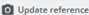
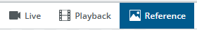
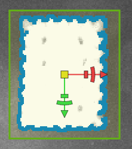
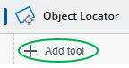
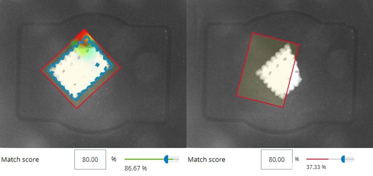

Exercises
Exercise 4 - Object Locator
In the previous exercise, you may have noticed that results improve when object positioning remains consistent. But what if your production process doesn’t allow precise alignment on a tray? The Object Locator tool uses edge matching based on clear contours to locate objects even when their position or rotation varies. It automatically moves attached inspection tools to match the detected object position.
Goal: Use the same object as before, but allow it to be placed freely within the tray. Apply the Object Locator so inspection tools adjust dynamically.
For the Object Locator to work, you need a reference image that the tool uses to calculate scale and rotation.
- Set your image acquisition settings and then click

in the bottom right of the preview window. Your view will switch from Live to Reference.

Here, add Analysis → Locate → Object Locator.
Set the region around your object so that the contours or some easily recognizable landmarks in the image are highlighted with a blue line. You can change the line’s sensitivity by adjusting the Edge Strength slider in the tool’s settings panel on the right.

Change the Rotation (±) setting to 180° to allow for full rotation of the object and set the Angle further below from -180° to 180. To further enhance your results, check out "?" for more information about the settings. Check the results by switching to live view. Move and rotate the object in the tray and verify that the green region frame moves and rotates with the object. If not change the settings.
-
Once the Object Locator is set up correctly, click Add tool below the Object Locator.

Now add AI Anomaly Detection. You might notice the working region is now anchored to the Object Locator. This means the Anomaly Detection will rotate with the object, making it easier to get accurate results. Move the Anomaly Detection tool to a part of the image that you want to analyze, collect sample images and train the network. Use Strict Matching for better results!
-
This approach works well in most cases, but if an object is severely damaged, the Object Locator may fail to find a match. When this happens, the AI Anomaly Detection tool cannot analyze the image because its region is anchored to the locator (which can’t latch onto the object).

-
Can you make it work anyway?
Tip
You can change the Object Locator’s work region by choosing a different shape or adding multiple ones, even subtracting from one another. You can try this with different objects.
-
Optional: Go back to the yogurt cup job and add an object locator to make it more precise/robust. How do you set up the object locator?